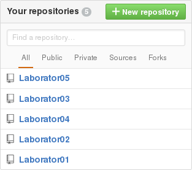
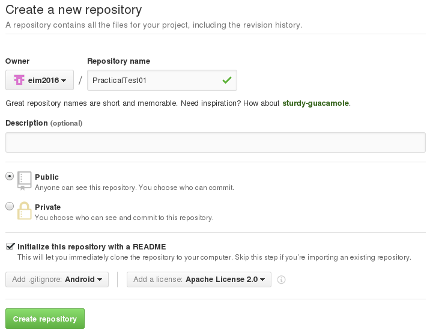

Table of Contents
Colocviu 1
Model de Subiect
Observații Generale
Pentru rezolvarea subiectelor propuse în cadrul colocviului 1, sunt necesare:
- un cont Github personal, pe care să existe drepturi de citire și de scriere;
- SDK-ul de Android (cu o imagine pentru nivelul de API 16 - Jelly Bean 4.1);
- mediul de dezvoltare integrat (Eclipse împreună cu plugin-ul Android Developer Tools sau Android Studio);
- un dispozitiv mobil:
- fizic (bring your own device);
- virtual: Genymotion, AVD.
Rezolvări
Proiectele Eclipse / Android Studio corespunzătoare aplicației Android ce conține rezolvările complete ale cerințelor colocviului sunt disponibile pe contul de Github al disciplinei.
A.1. Se accesează Github și se realizează autentificarea în contul personal, prin intermediul butonului Sign in.

Se creează o zonă de lucru corespunzătoare unui proiect prin intermediului butonului New Repository.

Configurarea depozitului la distanță presupune specificarea:
- unei denumiri;
- unei descrieri (opțional);
- tipului de director (public sau privat - doar contra cost!!!);
- modului de inițializare:
- local, prin
git init; - la distanță, prin
git clone- depozitul la distanță nu trebuie să fie vid, în această situațoe
- unui fișier
README(opțional); - extensiilor ignorate (corespunzătoare limbajului de programare folosit, în cazul de față - Android) - incluse în fișierul
.gitignore; - tipului de licență sub care este publicat codul sursă.

A.2. Prin intermediul comenzii git clone se poate descărca întregul conținut în directorul curent (de pe discul local), inclusiv istoricul complet al versiunilor anterioare (care poate fi ulterior reconstituit după această copie, în cazul coruperii informațiilor stocate pe serverul la distanță).
student@eim2016:~$ git clone https://www.github.com/perfectstudent/PracticalTest01
A.3. Se urmăresc indicațiile disponibile în secțiunea Crearea unei aplicații Android în Eclipse Mars 1 (4.5.1) sau Crearea unei aplicații Android în Android Studio 1.5.1.
A.4. Implementarea interfeței grafice va fi realizată prin intermediul unui fișier .xml care va fi plasat în directorul /res/layout al proiectului.
De cele mai multe ori, interfața grafică poate fi realizată în două moduri:
- prin folosirea unui singur container de tip
RelativeLayoutîn care vor fi plasate toate controalele, având poziția definită relativ unele la celelalte sau la marginile părintelui în care sunt incluse; - prin folosirea mai multor containere de tip
LinearLayout, imbricate, având orientări diferite (orizontal - implicit, sau vertical).
- Varianta 1 - un singur container de tip
RelativeLayout
android:layout_alignLeft și android:layout_alignRight (proprietatea android:layout_width fiind ignorată în acest caz). În mod similar, dacă se dorește alinierea cu un control aflat la stânga (aliniere pe verticală), acesta va fi precizat ca valoare pentru proprietățile android:layout_alignTop și android:layout_alignBottom (proprietatea android:layout_height fiind ignorată în acest caz).
- activity_practical_test01_main.xml
<RelativeLayout xmlns:android="http://schemas.android.com/apk/res/android" xmlns:tools="http://schemas.android.com/tools" android:layout_width="match_parent" android:layout_height="wrap_content" tools:context="ro.pub.cs.systems.eim.practicaltest01.PracticalTest01MainActivity" > <Button android:id="@+id/navigate_to_secondary_activity_button" android:layout_width="wrap_content" android:layout_height="wrap_content" android:layout_alignParentTop="true" android:layout_alignParentRight="true" android:text="@string/navigate_to_secondary_activity" /> <EditText android:id="@+id/left_edit_text" android:layout_width="wrap_content" android:layout_height="wrap_content" android:saveEnabled="false" android:enabled="false" android:inputType="number" android:ems="7" android:layout_alignParentLeft="true" android:layout_below="@id/navigate_to_secondary_activity_button" android:gravity="center" /> <EditText android:id="@+id/right_edit_text" android:layout_width="wrap_content" android:layout_height="wrap_content" android:saveEnabled="false" android:enabled="false" android:inputType="number" android:ems="7" android:layout_alignParentRight="true" android:layout_below="@id/navigate_to_secondary_activity_button" android:gravity="center" /> <Button android:id="@+id/left_button" android:layout_width="wrap_content" android:layout_height="wrap_content" android:layout_alignLeft="@id/left_edit_text" android:layout_below="@id/left_edit_text" android:layout_alignRight="@id/left_edit_text" android:text="@string/press_me" /> <Button android:id="@+id/right_button" android:layout_width="wrap_content" android:layout_height="wrap_content" android:layout_alignLeft="@id/right_edit_text" android:layout_alignRight="@id/right_edit_text" android:layout_below="@id/right_edit_text" android:text="@string/press_me_too" /> </RelativeLayout>
- Varianta 2 - mai multe containere de tip
LinearLayoutimbricate
android:layout_weight, însă pentru a fi luată în considerare, atributul android:layout_width, respectiv android:layout_height (în funcție de coordonata pe care se dorește obținerea unei astfel de funcționalități) trebuie să aibă valoarea 0dp.
- activity_practical_test01_main.xml
<LinearLayout xmlns:android="http://schemas.android.com/apk/res/android" xmlns:tools="http://schemas.android.com/tools" android:layout_width="match_parent" android:layout_height="wrap_content" android:orientation="vertical" tools:context="ro.pub.cs.systems.eim.practicaltest01.PracticalTest01MainActivity" > <LinearLayout android:layout_width="match_parent" android:layout_height="wrap_content" > <EditText android:id="@+id/left_edit_text" android:layout_width="0dp" android:layout_height="wrap_content" android:layout_weight="1" android:enabled="false" android:inputType="number" android:gravity="center" /> <EditText android:id="@+id/right_edit_text" android:layout_width="0dp" android:layout_height="wrap_content" android:layout_weight="1" android:enabled="false" android:inputType="number" android:gravity="center" /> </LinearLayout> <LinearLayout android:layout_width="match_parent" android:layout_height="wrap_content" android:baselineAligned="false" > <ScrollView android:layout_width="0dp" android:layout_height="wrap_content" android:layout_weight="1"> <Button android:id="@+id/left_button" android:layout_width="wrap_content" android:layout_height="wrap_content" android:layout_gravity="center" android:text="@string/press_me" /> </ScrollView> <ScrollView android:layout_width="0dp" android:layout_height="wrap_content" android:layout_weight="1"> <Button android:id="@+id/right_button" android:layout_width="wrap_content" android:layout_height="wrap_content" android:layout_gravity="center" android:text="@string/press_me_too" /> </ScrollView> </LinearLayout> </LinearLayout>
- Varianta 3 - un container de tip
LinearLayoutvertical care include un control grafic de tipButtonși un containerGridLayout, cu 2 linii și 2 coloane; pe linia 0 se vor găsi cele 2 câmpuri text editabile, a căror lungime trebuie să fie specificată explicit iar pe linia 1 cele două butoane, a căror aliniere (centrată pe orizontală raportat la celula din care fac parte) trebuie să fie precizată
- activity_practical_test01_main.xml
<LinearLayout xmlns:android="http://schemas.android.com/apk/res/android" xmlns:tools="http://schemas.android.com/tools" android:layout_width="match_parent" android:layout_height="match_parent" android:paddingBottom="@dimen/activity_vertical_margin" android:paddingLeft="@dimen/activity_horizontal_margin" android:paddingRight="@dimen/activity_horizontal_margin" android:paddingTop="@dimen/activity_vertical_margin" android:orientation="vertical" tools:context="ro.pub.cs.systems.eim.practicaltest01.PracticalTest01MainActivity" > <Button android:id="@+id/navigate_to_secondary_activity_button" android:layout_width="wrap_content" android:layout_height="wrap_content" android:text="@string/navigate_to_secondary_activity"/> <GridLayout android:layout_width="match_parent" android:layout_height="wrap_content" android:rowCount="2" android:columnCount="2"> <EditText android:id="@+id/left_edit_text" android:layout_width="wrap_content" android:layout_height="wrap_content" android:saveEnabled="false" android:enabled="false" android:inputType="number" android:ems="6" android:layout_row="0" android:layout_column="0" android:layout_gravity="center" android:gravity="center"/> <EditText android:id="@+id/right_edit_text" android:layout_width="wrap_content" android:layout_height="wrap_content" android:saveEnabled="false" android:enabled="false" android:inputType="number" android:ems="6" android:layout_row="0" android:layout_column="1" android:layout_gravity="center" android:gravity="center" /> <Button android:id="@+id/left_button" android:layout_width="wrap_content" android:layout_height="wrap_content" android:layout_row="1" android:layout_column="0" android:layout_gravity="center" android:text="@string/press_me" /> <Button android:id="@+id/right_button" android:layout_width="wrap_content" android:layout_height="wrap_content" android:layout_row="1" android:layout_column="1" android:layout_gravity="center" android:text="@string/press_me_too" /> </GridLayout> </LinearLayout>
În activitatea corespunzătoare, interfața grafică definită în fișierul .xml trebuie încărcată pe metoda onCreate() prin intermediul setContentView(), căreia i se transmite ca parametru identificatorul (referința) către această resursă (așa cum a fost generată în clasa abstractă R.layout). În situația în care este necesar să se realizeze anumite operații pe controalele grafice componente (spre exemplu, să se încarce conținutul acestora), trebuie inițial să se obțină o referință către aceasta printr-un apel al metodei findViewById(), care primește de asemenea ca parametru identificatorul (referința) către această resursă (așa cum a fost generată în clasa abstractă R.id).
onCreateOptionsMenu(), respectiv onOptionsItemSelected(), acestea fiind de regulă generate în mod automat de mediul integrat de dezvoltare Eclipse.
- PracticalTest01Activity.java
package ro.pub.cs.systems.eim.practicaltest01; import android.app.Activity; import android.content.Intent; import android.os.Bundle; import android.view.Menu; import android.view.MenuItem; import android.view.View; import android.widget.Button; import android.widget.EditText; import android.widget.Toast; public class PracticalTest01MainActivity extends Activity { private EditText leftEditText = null; private EditText rightEditText = null; private Button leftButton = null; private Button rightButton = null; @Override protected void onCreate(Bundle savedInstanceState) { super.onCreate(savedInstanceState); setContentView(R.layout.activity_practical_test01_main); leftEditText = (EditText)findViewById(R.id.left_edit_text); rightEditText = (EditText)findViewById(R.id.right_edit_text); leftEditText.setText(String.valueOf(0)); rightEditText.setText(String.valueOf(0)); leftButton = (Button)findViewById(R.id.left_button); rightButton = (Button)findViewById(R.id.right_button); } @Override public boolean onCreateOptionsMenu(Menu menu) { getMenuInflater().inflate(R.menu.practical_test01, menu); return true; } @Override public boolean onOptionsItemSelected(MenuItem item) { int id = item.getItemId(); if (id == R.id.action_settings) { return true; } return super.onOptionsItemSelected(item); } }
În mediul integrat de dezvoltare Eclipse, completarea automată a import-urilor necesare este realizată prin Ctrl+Shift+O.
În mediul integrat de dezvoltare Android Studio, completarea automată a import-urilor necesare este realizată prin Alt+Enter.
B.1. Pentru procesarea evenimentelor legate de interacțiunea de utilizator este necesară:
- implementarea unei clase ascultător pentru tipul de eveniment respectiv (se recomandă se se folosească o clasă internă - în cadrul activității -, cu nume);
- înregistrarea unui obiect - instanță a clasei - ca ascultător al controlului grafic, pentru tipul de eveniment respectiv.
Pe metoda onCreate() a activității se obțin referințe ale controlului grafic (prin metoda findViewById()) și se înregistrează obiectul ascultător respectiv.
public class PracticalTest01MainActivity extends Activity { private ButtonClickListener buttonClickListener = new ButtonClickListener(); private class ButtonClickListener implements View.OnClickListener { @Override public void onClick(View view) { switch(view.getId()) { case R.id.left_button: int leftNumberOfClicks = Integer.parseInt(leftEditText.getText().toString()); leftNumberOfClicks++; leftEditText.setText(String.valueOf(leftNumberOfClicks)); break; case R.id.right_button: int rightNumberOfClicks = Integer.parseInt(rightEditText.getText().toString()); rightNumberOfClicks++; rightEditText.setText(String.valueOf(rightNumberOfClicks)); break; } } } @Override protected void onCreate(Bundle savedInstanceState) { super.onCreate(savedInstanceState); // ... leftButton.setOnClickListener(buttonClickListener); rightButton.setOnClickListener(buttonClickListener); } // ... }
B.2.
a) Pentru majoritatea controalelor grafice, sistemul de operare Android realizează în mod automat salvarea / restaurarea stării în situația în care o activitate este distrusă pentru asigurarea necesarului de memorie. Dacă se dorește ca această operație să fie tratată în alt mod, dezactivarea acestui mecanism se realizează prin specificarea atributului android:saveEnabled corespunzător controlului grafic respectiv având valoarea false.
<LinearLayout ... > <EditText android:id="@+id/left_edit_text" android:saveEnabled="false" ... /> <EditText android:id="@+id/right_edit_text" android:saveEnabled="false" ... /> <!-- other nested layouts or widgets --> </LinearLayout>
b) În situația în care sistemul de operare Android distruge activitatea pentru asigurarea resurselor necesare, este necesară asigurarea unui comportament consistent / persistenței aplicației:
- salvarea stării se realizează pe metoda
onSaveInstanceState()care primește un parametru de tipBundleîn care vor fi stocate informațiile respective, identificarea lor realizându-se prin intermediul unei chei de tip șir de caractere; metoda este invocată înainte deonStop()deși pot exista situații în care aceasta este apelată chiar înainte deonPause(); - restaurarea stării se realizează:
- pe metoda
onCreate()pentru care parametrul de tipBundleeste nenul în situația în care există o stare anterioară; - pe metoda
onRestoreInstanceState()care este invocată în mod automat - primind un parametru de tipBundlenumai în situația în care există o stare anterioară; metoda se apelează între metodeleonStart()șionRestore().
Bundle nu pot fi stocate decât obiecte care implementează android.os.Parcelable.
Salvarea stării implică plasarea în obiectul de tip Bundle a unei valori, prin metode de tip put<type>(), folosind un șir de caractere definit de utilizator (o convenție de nume).
Restaurarea stării implică preluarea în obiectul de tip Bundle a valorii, prin metode de tip get<type>(), folosind șirul de caractere corespunzător (convenția de nume). Se recomandă să se verifice faptul că valoarea respectivă este nenulă (respectiv nu a fost furnizată valoarea implicită).
onRestoreInstanceState() în detrimentul metodei onCreate() pentru că în acest fel nu trebuie să se verifice starea obiectului de tip Bundle, iar procesările în urma cărora este creată o instanță a activității sunt mai rapide.
public class PracticalTest01MainActivity extends Activity { @Override protected void onCreate(Bundle savedInstanceState) { super.onCreate(savedInstanceState); // ... if (savedInstanceState != null) { if (savedInstanceState.containsKey("leftCount")) { leftEditText.setText(savedInstanceState.getString("leftCount")); } else { leftEditText.setText(String.valueOf(0)); } if (savedInstanceState.containsKey("rightCount")) { rightEditText.setText(savedInstanceState.getString("rightCount")); } else { rightEditText.setText(String.valueOf(0)); } } else { leftEditText.setText(String.valueOf(0)); rightEditText.setText(String.valueOf(0)); } } @Override protected void onSaveInstanceState(Bundle savedInstanceState) { savedInstanceState.putString("leftCount", leftEditText.getText().toString()); savedInstanceState.putString("rightCount", rightEditText.getText().toString()); } @Override protected void onRestoreInstanceState(Bundle savedInstanceState) { if (savedInstanceState.containsKey("leftCount")) { leftEditText.setText(savedInstanceState.getString("leftCount")); } else { leftEditText.setText(String.valueOf(0)); } if (savedInstanceState.containsKey("rightCount")) { rightEditText.setText(savedInstanceState.getString("rightCount")); } else { rightEditText.setText(String.valueOf(0)); } } // ... }
c) Pentru a simula faptul că sistemul de operare Android distruge activitatea pentru asigurarea necesarului de resurse, se poate proceda astfel:
- se oprește activitatea prin accesarea butonului Menu, astfel încât activitatea să rămână în memorie, fără a fi însă vizibilă, asigurându-se totodată apelarea metodelor
onPause()șionStop()și implicit a metodeionSaveInstanceState(); - în Eclipse, se deschide Dalvik Debug Monitor System (DDMS), se identifică procesul corespunzător activății respective și se oprește forțat (prin intermediul butonului Stop);

- în Android Studio, în secțiunea AndroidMonitor, se oprește aplicația Android prin intermediul butonului Terminate Application:

- se (re)pornește activitatea din meniul dispozitivului mobil, astfel încât să se apeleze metodele
onCreate(), respectivonStart()șionResume()(și, implicit,onRestoreInstanceState()).
În mediul integrat de dezvoltare Android Studio, AMS (Android Device Monitor) este pornit din Tools → Android → Android Device Monitor.
d) În situația în care utilizatorul apasă butonul Back, se apelează metodele onPause(), onStop() și onDestroy(), fără a se invoca însă și metoda onSaveInstanceState() întrucât se consideră că în această situație utilizatorul nu își dorește să revină la starea curentă a activității. Din acest motiv, starea nu este salvată în obiectul de tip Bundle și acesta nu va conține informațiile respective care să poată fi astfel restaurate.
Dacă se dorește salvarea / restaurarea stării în situația în care utilizatorul apasă tasta Back, se recomandă să se utilizeze un alt mecanism pentru asigurarea persistenței, cum ar fi baza de date SQLite sau un obiect de tipul android.content.SharedPreferences.
C.1. Într-o aplicație Android, o activitate trebuie să fie precizată prin următoarele elemente:
- o etichetă de tip
<activity>în fișiserulAndroidManifest.xml, având asociată și un filtru de intenții (etichetă de tip<intent-filter>); - o interfață grafică, definită în cadrul unui fișier
.xmlîn directorul/res/layout; - o clasă derivată din
Activity, în care să se implementeze cel puțin metodaonCreate(), pe care să se încarce interfața grafică definită anterior.
În mediul integrat de dezvoltare Eclipse, crearea acestor resurse este realizată în mod automat în momentul în care se solicită definirea unei resurse de tip Android Activity (File → New → Other → Android → Android Activity).


În mediul integrat de dezvoltare Android Studio, crearea acestor resurse este realizată în mod automat în momentul în care se solicită definirea unei resurse de tip Android Activity (File → New → Activity → Blank Activity).

a) În fișierul AndroidManifest.xml se specifică activitatea printr-o element de tip <activity> în cadrul etichetei <application> pentru care se definesc:
- atributul
android:nameîn care se indică denumirea clasei de tipActivitycare va gestiona activitatea (afișarea interfeței grafice și tratarea interacțiunii cu utilizatorul); - atributul
android:labelprecizează o etichetă care va fi asociată activității; - un filtru de intenții, prin care se controlează modul în care va putea fi lansată în execuție prin intermediul unei alte intenții:
- eticheta
<action>stabilește acțiunea pe care o poate realiza activitatea; va avea o valoare definită de utilizator, reprezentând o convenție; - eticheta
<category>clasifică activitatea, impunându-se să fie folosită valoareaandroid.intent.category.DEFAULTpentru ca activitatea să poată fi invocată prin intermediul unei intenții.
AndroidManifest.xml nu se completează în mod automat și filtrul de intenții, fiind necesar ca acesta să fie menționat de utilizator, manual.
- AndroidManifest.xml
<manifest ... > <application ... > <activity android:name=".PracticalTest01SecondaryActivity" android:label="@string/title_activity_practical_test01_secondary" > <intent-filter> <action android:name="ro.pub.cs.systems.eim.intent.action.PracticalTest01SecondaryActivity" /> <category android:name="android.intent.category.DEFAULT" /> </intent-filter> </activity> </application> </manifest>
b) O interfață grafică este definită în mod obișnuit, prin intermediul unui fișier .xml plasat în directorul /res/layout în care sunt precizate controalele grafice cu atributele și valorile lor, sub formă de componente în cadrul unor mecanisme de dispunere.
- activity_practical_test01_secondary.xml
<LinearLayout xmlns:android="http://schemas.android.com/apk/res/android" xmlns:tools="http://schemas.android.com/tools" android:layout_width="match_parent" android:layout_height="match_parent" android:orientation="vertical" tools:context="ro.pub.cs.systems.eim.practicaltest01.PracticalTest01SecondaryActivity" > <TextView android:id="@+id/number_of_clicks_text_view" android:layout_width="match_parent" android:layout_height="wrap_content" android:gravity="center" /> <LinearLayout android:layout_width="wrap_content" android:layout_height="wrap_content" android:layout_gravity="center" > <Button android:id="@+id/ok_button" android:layout_width="wrap_content" android:layout_height="wrap_content" android:text="@string/ok" /> <Button android:id="@+id/cancel_button" android:layout_width="wrap_content" android:layout_height="wrap_content" android:text="@string/cancel" /> </LinearLayout> </LinearLayout>
c) În clasa care gestionează comportamentul activității, pe metoda onCreate(), în mod obișnuit, se încarcă interfața grafică (prin metoda setContentView()), se obțin referințe către controalele grafice (printr-un apel al metodei findViewById()) și se stabilește conținutul acestora, respectiv se înregistrează obiecte ascultător pentru anumite tipuri de evenimente (după ce în prealabil a fost implementată și clasa corespunzătoare).
Pentru activitățile care sunt invocate prin intermediul unei intenții:
- se poate obține o referință către intenție, din contextul căruia pot fi obținute informațiile atașate în secțiunea
extraprin intermediul metodelorgetExtras()sauget<type>Extra()care primesc ca parametru cheia sub care au fost stocate datele respective; - se poate transmite un rezultat înapoi către activitatea din care au fost invocate prin intermediul metodei
setResult()care primește ca parametri:- un cod de rezultat întreg (frecvent, sunt folosite valorile RESULT_OK și RESULT_CANCELED, dar poate fi folosită și o valoare definită de utilizator);
- o intenție, în care pot fi plasate informații suplimentare.
Metoda finish() poate fi folosită pentru a finaliza activitatea în mod forțat (semnalând faptul că procesările corespunzătoare activității au fost terminate).
- PracticalTest01SecondaryActivity.java
package ro.pub.cs.systems.eim.practicaltest01; import android.app.Activity; import android.content.Intent; import android.os.Bundle; import android.view.Menu; import android.view.MenuItem; import android.view.View; import android.widget.Button; import android.widget.TextView; public class PracticalTest01SecondaryActivity extends Activity { private TextView numberOfClicksTextView = null; private Button okButton = null; private Button cancelButton = null; private ButtonClickListener buttonClickListener = new ButtonClickListener(); private class ButtonClickListener implements View.OnClickListener { @Override public void onClick(View view) { switch(view.getId()) { case R.id.ok_button: setResult(RESULT_OK, null); break; case R.id.cancel_button: setResult(RESULT_CANCELED, null); break; } finish(); } } @Override protected void onCreate(Bundle savedInstanceState) { super.onCreate(savedInstanceState); setContentView(R.layout.activity_practical_test01_secondary); numberOfClicksTextView = (TextView)findViewById(R.id.number_of_clicks_text_view); Intent intent = getIntent(); if (intent != null && intent.getExtras().containsKey("numberOfClicks")) { int numberOfClicks = intent.getIntExtra("numberOfClicks", -1); numberOfClicksTextView.setText(String.valueOf(numberOfClicks)); } okButton = (Button)findViewById(R.id.ok_button); okButton.setOnClickListener(buttonClickListener); cancelButton = (Button)findViewById(R.id.cancel_button); cancelButton.setOnClickListener(buttonClickListener); } @Override public boolean onCreateOptionsMenu(Menu menu) { getMenuInflater().inflate(R.menu.practical_test01_secondary, menu); return true; } @Override public boolean onOptionsItemSelected(MenuItem item) { int id = item.getItemId(); if (id == R.id.action_settings) { return true; } return super.onOptionsItemSelected(item); } }
C.2. Pentru a invoca o altă activitate prin intermediul unei intenții, o activitate trebuie:
- să definească în interfața grafică un control prin intermediul căruia va fi lansată în execuție activitatea respectivă (în fișierul
.xmldin directorul/res/layout);
<LinearLayout xmlns:android="http://schemas.android.com/apk/res/android" xmlns:tools="http://schemas.android.com/tools" android:layout_width="match_parent" android:layout_height="wrap_content" android:orientation="vertical" tools:context="ro.pub.cs.systems.eim.practicaltest01.PracticalTest01MainActivity" > <Button android:id="@+id/navigate_to_secondary_activity_button" android:layout_width="wrap_content" android:layout_height="wrap_content" android:layout_gravity="right" android:text="@string/navigate_to_secondary_activity" /> <!-- other nested layouts or widgets --> </LinearLayout>
- în codul sursă corespunzător clasei care gestionează activitatea respectivă:
- pe metoda
onCreate():- să obțină o referință către controlul grafic prin intermediul căruia va fi lansată în execuție o altă activitate;
- să înregistreze un obiect ascultător care va trata evenimentul legat de controlul grafic respectiv;
- să definească o clasă ascultător (internă, cu nume) pentru tipul de eveniment respectiv, iar pe metoda de tratare se vor realiza următoarele operații:
- se va instanția un obiect de tip
Intent, care poate primi ca parametru:- contextul curent (obiectul
this) și clasa care deservește activitatea (obiect de tip.class) - adecvată situației în care activitatea invocată se găsește în aceeași aplicație ca și activitatea care invocă; - acțiunea asociată activității în filtrul de intenții - adecvată situației în care activitatea invocată se găsește în altă aplicație decât activitatea care o invocă;
- se asociază un set de informații care vor fi transmise celeilalte activități (în secțiunea
extraa intenției) prin intermediul metodeiputExtra(), fiecare valoare (de tipandroid.os.Parcelable) având asociat un atribut prin care va fi identificat ulterior, de tip șir de caractere; - se lansează în execuție activitatea prin intermediul metodei
startActivityForResult()care primește ca parametru intenția și un cod de cerere, având rolul de a identifica ulterior instanța activității din care se revine.
- să implementeze metoda
onActivityResult(), apelată în mod automat la revenirea din activitatea invocată, aceasta primind ca parametrii:- codul de cerere trimis în momentul în care activitatea a fost lansată în execuție;
- rezultatul furnizat de activitatea invocată;
- intenția generată de activitatea invocată.
public class PracticalTest01MainActivity extends Activity { private final static int SECONDARY_ACTIVITY_REQUEST_CODE = 1; private Button navigateToSecondaryActivityButton = null; private ButtonClickListener buttonClickListener = new ButtonClickListener(); private class ButtonClickListener implements Button.OnClickListener { @Override public void onClick(View view) { switch(view.getId()) { case R.id.navigate_to_secondary_activity_button: Intent intent = new Intent(getApplicationContext(), PracticalTest01SecondaryActivity.class); int numberOfClicks = Integer.parseInt(leftEditText.getText().toString()) + Integer.parseInt(rightEditText.getText().toString()); intent.putExtra("numberOfClicks", numberOfClicks); startActivityForResult(intent, SECONDARY_ACTIVITY_REQUEST_CODE); break; // ... } } } @Override protected void onCreate(Bundle savedInstanceState) { super.onCreate(savedInstanceState); // ... navigateToSecondaryActivityButton = (Button)findViewById(R.id.navigate_to_secondary_activity_button); navigateToSecondaryActivityButton.setOnClickListener(buttonClickListener); } @Override protected void onActivityResult(int requestCode, int resultCode, Intent intent) { if (requestCode == SECONDARY_ACTIVITY_REQUEST_CODE) { Toast.makeText(this, "The activity returned with result " + resultCode, Toast.LENGTH_LONG).show(); } } // ... }
D.1. a) Pentru a putea fi utilizat, serviciul trebuie să fie declarat în fișierul AndroidManifest.xml. Este obligatoriu să se definească proprietatea android:name care desemnează clasa care gestionează serviciul.
Opțional, pot fi precizate și atributele:
android:enabled, care indică posibilitatea ca sistemul de operare Android să instanțieze serviciul;android:exported, prin care se oferă posibilitatea ca serviciul să poată fi invocat și din contextul altei aplicații Android decât cea din care face parte acesta;android:permission, care limitează posibilitatea ca serviciul respectiv să fie lansat în execuție exclusiv de componentele care dețin permisiunea specificată.
- AndroidManifest.xml
<?xml version="1.0" encoding="utf-8"?> <manifest ... > <application ...> <!-- other components --> <service android:name="ro.pub.cs.systems.eim.PracticalTest01Service" android:enabled="true" android:exported="false" /> </application> </manifest>
Clasa Java care gestionează serviciul trebuie să fie derivată din clasa android.app.Service.
Fiind un serviciu de tip started, trebuie supraîncărcate metodele de callback:
onStartCommand(intent, flags, id), apelat în mod automat în momentul în care componenta Android lansează serviciul în execuție printr-o invocare a metodeistartService();onBind(intent)care va furniza un rezultatnull, întrucât nu este necesară o interfață prin care componenta Android să interacționeze cu serviciul.
- PracticalTest01Service.java
import android.app.Service; import android.content.Intent; import android.os.IBinder; public class PracticalTest01Service extends Service { private ProcessingThread processingThread = null; @Override public int onStartCommand(Intent intent, int flags, int startId) { int firstNumber = intent.getIntExtra("firstNumber", -1); int secondNumber = intent.getIntExtra("secondNumber", -1); processingThread = new ProcessingThread(this, firstNumber, secondNumber); processingThread.start(); return Service.START_REDELIVER_INTENT; } @Override public IBinder onBind(Intent intent) { return null; } @Override public void onDestroy() { processingThread.stopThread(); } }
Întrucât procesarea realizată în cadrul serviciului ar ocupa timp de procesor, putând avea un impact asupra responsivității aplicației Android în privința interacțiunii cu utilizatorul, operațiile respective vor fi realizate pe un fir de execuție dedicat. Argumentele care vor fi transmise firului de execuție dedicat sunt contextul, întrucât pe baza acestuia se vor transmite intențiile cu difuzare, precum și cele două numere din cadrul interfeței grafice, transmise prin intermediul intenției, ca valori asociate cheilor firstNumber, respectiv secondNumber. Valoarea pe care o furnizează metoda onStartCommand() este Service.START_REDELIVER_INTENT, ceea ce indică sistemului de operare Android faptul că serviciul trebuie repornit în situația în care este distrus pentru a se recupera resursele pe care acesta le utilizează, în caz de nevoie. De asemenea, va fi retransmisă și intenția utilizată pentru a invoca serviciul respectiv.
- ProcessingThread.java
import java.util.Date; import java.util.Random; import android.content.Context; import android.content.Intent; import android.util.Log; public class ProcessingThread extends Thread { private Context context = null; private boolean isRunning = true; private Random random = new Random(); private double arithmeticMean; private double geometricMean; public ProcessingThread(Context context, int firstNumber, int secondNumber) { this.context = context; arithmeticMean = (firstNumber + secondNumber) / 2; geometricMean = Math.sqrt(firstNumber * secondNumber); } @Override public void run() { Log.d("[ProcessingThread]", "Thread has started!"); while (isRunning) { sendMessage(); sleep(); } Log.d("[ProcessingThread]", "Thread has stopped!"); } private void sendMessage() { Intent intent = new Intent(); intent.setAction(Constants.actionTypes[random.nextInt(Constants.actionTypes.length)]); intent.putExtra("message", new Date(System.currentTimeMillis()) + " " + arithmeticMean + " " + geometricMean); context.sendBroadcast(intent); } private void sleep() { try { Thread.sleep(10000); } catch (InterruptedException interruptedException) { interruptedException.printStackTrace(); } } public void stopThread() { isRunning = false; } }
În contextul firului de execuție dedicat, se calculează inițial valorile necesare (media aritmetică și media geometrică).
Rutina asociată firului de execuție implică următoarele operații:
- propagarea unei intenții cu difuzare la nivelul sistemului de operare Android;
- se creează un obiect de tip
Intentcare reprezintă intenția cu difuzare care va fi propagată;- acțiunea asociată intenției este aleasă în mod aleator dintr-o colecție de tipuri de intenții definite de utilizator;
- informația conținută de intenția cu difuzare este plasată în câmpul
extra, valoarea (șirul de caractere obținut prin concatenarea datei și orei curente cu media aritmetică și cu media geometrică) fiind asociată cheiimessage;
- se transmite intenția cu difuzare la nivelul sistemului de operare Android prin invocarea metodei
sendBroadcast()(definită în clasaContext);
- așteptarea unui interval de timp (10.000 ms) până la următoarea iterație, prin intermediul unui apel
Thread.sleep().
Trebuie implementată și o metodă pentru oprirea rulării firului de execuție în situația în care serviciul asociat este distrus.
b) În clasa PracticalTest01Acivity, sunt plasate operațiile de pornire și de oprire a serviciului.
Verificarea momentului în care trebuie pornit serviciul este realizată pe metoda ascultător a evenimentului de apăsare a unui buton. Se realizează suma dintre valorile conținute în cele două câmpuri text editabile și, în situația în care aceasta depășește pragul minim stabilit și dacă serviciul se găsește în starea oprit, atunci poate fi invocată metoda startService(). Aceasta primește ca argument un obiect de tip Intent (explicit, instanțiat cu contextul și cu clasa aferentă serviciului) în care sunt plasate, în câmpul extra, valorile din câmpurile text editabile sub cheile firstNumber și secondNumber.
private class ButtonClickListener implements View.OnClickListener { @Override public void onClick(View view) { int leftNumberOfClicks = Integer.parseInt(leftEditText.getText().toString()); int rightNumberOfClicks = Integer.parseInt(rightEditText.getText().toString()); // ... if (leftNumberOfClicks + rightNumberOfClicks > Constants.NUMBER_OF_CLICKS_THRESHOLD && serviceStatus == Constants.SERVICE_STOPPED) { Intent intent = new Intent(getApplicationContext(), PracticalTest01Service.class); intent.putExtra("firstNumber", leftNumberOfClicks); intent.putExtra("secondNumber", rightNumberOfClicks); getApplicationContext().startService(intent); serviceStatus = Constants.SERVICE_STARTED; } } }
Momentul la care este oprit serviciul coincide cu distrugerea activității, așadar pe metoda de callback onDestroy(). Similar, această operație poate fi realizată și pe metoda de callback onStop(). Metoda stopService() primește ca argument tot un obiect de tip Intent construit explicit, cu numele clasei care deservește serviciul.
@Override protected void onDestroy() { Intent intent = new Intent(this, PracticalTest01Service.class); stopService(intent); super.onDestroy(); }
Dacă serviciul este oprit, el va fi distrus de sistemul de operare Android (deși stopService() nu implică invocarea unei metode de callback la nivelul serviciului, totuși acesta va fi oprit și ulterior distrus). Pe metoda onDestroy() a serviciului, trebuie să se aibă grijă ca rutina din cadrul firului de execuție asociat să se termine.
D.2. Un ascultător pentru intenții cu difuzare este o clasă derivată din android.content.BroadcastReceiver. Acesta poate fi declarat în fișierul AndroidManifest.xml, dacă se dorește ca acesta să fie invocat în mod automat chiar dacă aplicația Android din care face parte nu este instanțiată sau poate fi înregistrat / deînregistrat pe metodele de callback onResume() / onPause() dacă se dorește ca funcționarea sa să fie limitată la perioada în care activitatea este disponibilă pe suprafața de afișare a dispozitivului mobil.
În momentul în care o intenție cu difuzare are aceeași acțiune ca cea indicată în filtrul de intenții asociat ascultătorului respectiv, este apelată în mod automat metoda de callback onReceive(context, intent). Aceasta va fi responsabilă exclusiv cu jurnalizarea valorii asociate cheii message din câmpul extra asociat intenției cu difuzare respective.
private MessageBroadcastReceiver messageBroadcastReceiver = new MessageBroadcastReceiver(); private class MessageBroadcastReceiver extends BroadcastReceiver { @Override public void onReceive(Context context, Intent intent) { Log.d("[Message]", intent.getStringExtra("message")); } }
Un ascultător pentru intenții cu difuzare trebuie să aibă asociat și un filtru de intenții. Acesta conține acțiunile asociate intențiilor cu difuzare, pe care ascultătorul respectiv trebuie să le proceseze.
public class PracticalTest01MainActivity extends Activity { // ... private IntentFilter intentFilter = new IntentFilter(); @Override protected void onCreate(Bundle savedInstanceState) { super.onCreate(savedInstanceState); setContentView(R.layout.activity_practical_test01_main); for (int index = 0; index < Constants.actionTypes.length; index++) { intentFilter.addAction(Constants.actionTypes[index]); } } }
Operațiile de activare, respectiv de dezactivare a ascultătorului pentru intenții cu difuzare, sunt realizate pe metodele de callback ale activității onResume(), respectiv onPause(). În acest fel, se asigură faptul că ascultătorul pentru intenții cu difuzare nu va procesa decât mesajele transmise în perioada în care activitatea este afișată pe suprafața de afișare a dispozitivului mobil.
public class PracticalTest01MainActivity extends Activity { // ... @Override protected void onResume() { super.onResume(); registerReceiver(messageBroadcastReceiver, intentFilter); } @Override protected void onPause() { unregisterReceiver(messageBroadcastReceiver); super.onPause(); } }
D.3. Pentru încărcarea codului în contextul depozitului din cadrul contului Github personal:
- se transferă modificările din zona de lucru în zona de lucru în zona de așteptare prin intermediul comenzii
git add, indicându-se și fișierele respective (pot fi folosite șabloane pentru a desemna mai multe fișiere); - se consemnează modificările din zona de așteptare în directorul Git prin intermediul comenzii
git commit -m, precizându-se și un mesaj sugestiv: - se încarcă modificările la distanță, prin intermediul comenzii
git push, care primește ca parametrii:- sursa (prin eticheta
originse indică depozitul de unde au fost descărcat conținutul); - destinația: ramificația curentă (implicit, aceasta poartă denumirea
master).
student@eim2016:~/PracticalTest01$ git add * student@eim2016:~/PracticalTest01$ git commit -m "finished tasks for PracticalTest01" student@eim2016:~/PracticalTest01$ git push origin master
În cazul în care este necesar, vor fi configurați parametrii necesari operației de consemnare (numele de utilizator și adresa de poștă electronică):
student@eim2016:~/PracticalTest01$ git config --global user.name "Perfect Student" student@eim2016:~/PracticalTest01$ git config --global user.email perfectstudent@cs.pub.ro